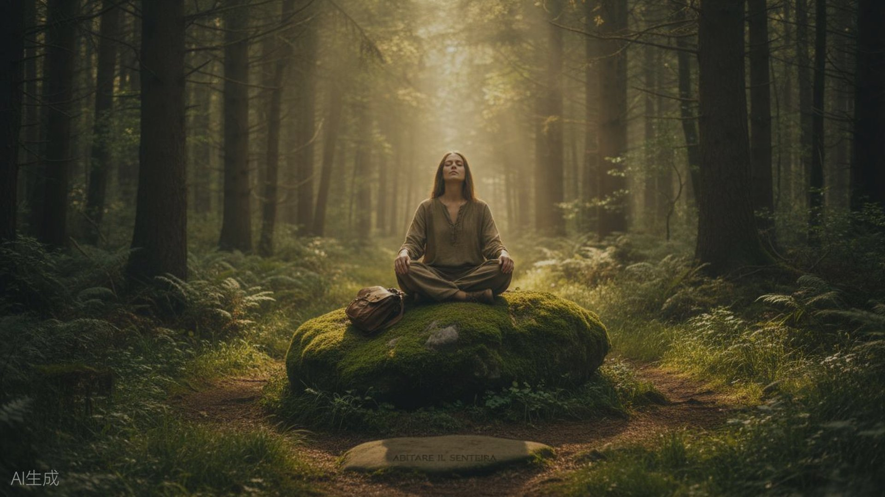
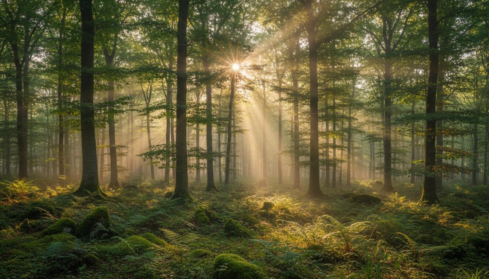

Immersione · 2 giorni
Escape the City
Fuoco, orientamento, cammino, notte nel bosco. Esci dal rumore. Entra nell'esperienza.
Scopri Escape →Torna a sentirti parte del mondo vivente.
Esperienze nel selvatico per rallentare, esplorare, sentire e tornare in relazione con ciò che ti circonda.
Cammini · fuoco · orientamento · bushcraft · gioco · silenzio · osservazione
Viviamo imparando a fare sempre di più. Guardiamo avanti. Organizziamo. Rispondiamo. Corriamo.
E spesso facciamo esperienza del mondo attraverso uno schermo, una notifica, una mappa, una spiegazione.
Il corpo però continua a chiedere altro. Tempo. Spazio. Movimento. Silenzio. Relazione.
Non devi scappare dalla tua vita. Puoi imparare un altro modo di starci dentro.

Il selvatico non è un luogo magico. È un luogo dove non tutto risponde alle tue previsioni.
Il terreno cambia. Una traccia scompare. Il fuoco può non prendere. La luce finisce. I suoni cambiano.
E improvvisamente devi tornare a guardare. A sentire. A provare. Ad adattarti.
Il bosco smette di essere uno sfondo. Diventa parte dell'esperienza.

Non ti portiamo nel bosco per spiegarti il bosco. Ti portiamo nel bosco perché tu possa incontrarlo.
Prima fai. Poi guardi cosa succede. Ti fai una domanda. Provi ancora.
E magari scopri qualcosa che nessuno aveva previsto di insegnarti.
Il fuoco è un fuoco. Un sentiero è un sentiero. Ma quello che succede mentre li attraversi può essere molto più grande.
Provare. Sbagliare. Adattare. Prendersi cura.
Leggere il territorio invece di affidarsi soltanto agli strumenti.
Osservare ciò che è successo senza averlo visto accadere.
Muoversi. Fermarsi. Seguire una curiosità.
Imparare facendo. Fare insieme. Trovare una soluzione.
Lasciare spazio a ciò che normalmente non ascolti.
Tornare a esplorare senza dover essere bravi.
Scoprire quanto cambia un luogo quando cambia il tuo modo di guardarlo.
Non esiste un unico modo di abitare il sentiero. Puoi iniziare facendo. Oppure osservando, esplorando, seguendo una traccia, costruendo qualcosa. E poi tornare.
Esperienze brevi per provare un diverso modo di stare: camminate sensoriali, fuoco, tracce, micro-avventure.
Il tempo per vivere un ciclo più completo: Escape the City, Elementi di Convivenza, esperienze stagionali.
La persona torna. Il luogo ritorna. Le pratiche ritornano. Il gruppo si approfondisce.
Non più soltanto eventi: ritorni, stagioni, pratiche, cammini, persone che si riconoscono.

Il bosco non ti chiede di essere bravo.
Ti chiede di essere presente.
Capire. Osservare. Fare domande. Collegare.
Sentire. Lasciarsi sorprendere. Entrare in relazione. Attribuire significato.
Fare. Costruire. Sperimentare. Provare.
Non sono tre momenti separati. Sono tre modi di entrare nella stessa esperienza.

Ti accompagniamo. Creiamo condizioni. Facciamo domande. Ti lasciamo provare. Osserviamo cosa succede. Raccontiamo quando una storia può aprire una porta.
E soprattutto lasciamo spazio. Perché non tutto quello che vivi deve avere una spiegazione pronta.
Mostra prima. Fai domandare. Lascia spazio. Lascia emergere il significato.
Non è per te se cerchi…
Per il resto basta una cosa: la curiosità.

Un sentiero cambia con la pioggia. Un bosco cambia con le stagioni. Una traccia compare e scompare.
Un luogo che oggi sembra familiare domani può mostrarti qualcosa che non avevi visto.
Per questo non cerchiamo soltanto posti belli. Cerchiamo luoghi con cui poter entrare in relazione.
Tutto quello che facciamo insieme serve a una cosa sola: passare dal fare per ottenere, allo stare presenti in ciò che accade.
La prima volta vieni per fare esperienza. Poi qualcosa comincia a diventare familiare. Un'esperienza diventa una relazione.

Un'esperienza può durare un giorno. Una relazione con un luogo può durare molto di più. Per questo stiamo costruendo percorsi che ritornano nel tempo: stesse persone, stagioni diverse, pratiche che si ripetono.
Fuoco, orientamento, cammino, notte nel bosco. Esci dal rumore. Entra nell'esperienza.
Scopri Escape →Riparo, fuoco, cibo, collaborazione. Un'immersione più profonda nello stare insieme.
Scopri l'esperienza →
Provare, sbagliare, adattare. Il fuoco come porta per tornare a fare esperienza.
Esplora →
Leggere il territorio, orientarsi, tracciare una direzione. Un'esperienza per allenare lo sguardo.
Esplora →
Muoversi lentamente nel paesaggio, abbastanza da iniziare a notarlo.
Scopri →
Un cammino storico, con il tempo di fermarsi e guardare ciò che di solito passa inosservato.
Scopri →Tutte le esperienze in programma. Gruppi piccoli, posti che finiscono: scrivimi per assicurarti il posto.
Date indicative, da confermare. Iscriviti qui sotto per ricevere il calendario aggiornato.
Giulia
Escape the City
"La prima notte nel bosco non la scordo. Ci torno con la mente ancora adesso."
Davide
La Mappa del tuo Viaggio
"Ho iniziato a notare cose che di solito non vedo. È rimasto un modo diverso di guardare."
Marta
Elementi di Convivenza
"Sono venuta senza sapere cosa cercavo. Sono tornata con una domanda."
Luca
Accendi il tuo Fuoco
"Il fuoco non prendeva. Poi ho capito che stavo forzando. Vale anche fuori dal bosco."
Sara
Il Cammino
"Camminare lento mi ha fatto tornare nel corpo. Una cosa piccola che mi è rimasta."
Scorri per vedere altre voci → · Video segnaposto, da sostituire con le testimonianze reali.
Non pensavo che accendere un fuoco potesse insegnarmi così tanto sulla pazienza. Ci torno con la mente ancora adesso.
— Giulia, dopo Escape the City
Ho notato cose che di solito non vedo. Un albero, una traccia, il modo in cui cambia la luce. È rimasto un modo diverso di guardare.
— Davide, dopo una camminata
Sono venuto senza sapere cosa cercavo. Sono tornato con una domanda e la voglia di tornare nel bosco.
— Marta, dopo Elementi di Convivenza

Guida ambientale e facilitatore. Porto nel lavoro con le persone ciò che ho imparato attraverso natura, viaggio, bushcraft, agricoltura, permacultura e apprendimento esperienziale.
Non mi interessa riempire le persone di informazioni. Mi interessa creare le condizioni perché possano fare esperienza.

Sei capitoli per capire come sei finito a gestire la vita invece di viverla — e da dove si comincia a cambiare il modo in cui stai in un luogo.

Puoi iniziare da una curiosità. Da un fuoco. Da un sentiero. Da una traccia. Da una notte fuori. Il resto si scopre camminando.
Prossime uscite, storie dal bosco, pensieri attorno al fuoco. Gruppi piccoli, posti che finiscono.